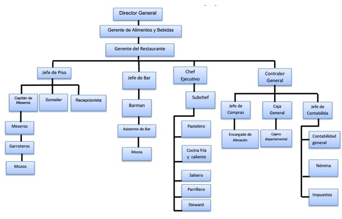

Quienes somos
La Spezia Ristorante nació en el 1994, el local esta completamente renovado para albergar este templo gastronómico dedicado a la alta cocina italiana, se ha diseñado para crear un ambiente cómodo y elegante en donde fantasear y admirar la colección de arte propiedad de nuestro chef y dar a conocer un poco de su personalidad.
Misión-Visión-Valores
Misión
ofrecer una cocina comprometida con la vanguardia creativa, sin renunciar a la memoria de sus raíces. En nuestro ambiente se puede disfrutar de toda una experiencia, la atmósfera esta diseñada para complacer a nuestros visitantes
Visión
Ser el restaurante italiano más completo y famoso de toda la República Dominicana.
Valores
Pasión
La pasión se materializa en esa milla extra que ponemos día a día en cada una de las labores que desempeñamos; en el entusiasmo que reina en el equipo de trabajo ante el deber cumplido; y en el cuidado que ponemos en cada detalle para lograr superar las expectativas de nuestros miles de clientes.
Autenticidad
Hemos desarrollado una forma particular de ejercer nuestro negocio, cultivando así la confianza y la credibilidad de nuestros clientes hacia los productos y servicios que ofrecemos.
Calidad
Está presente en todo lo que hacemos desde el uso de estándares mundiales en la ejecución de nuestros procesos hasta la forma en que presentamos y ofrecemos nuestros productos y servicios en nuestros formatos constituye nuestro principal diferenciador tanto en los productos como en los servicios que ofrecemos en nuestros formatos.
Organigrama

Directorio institucional